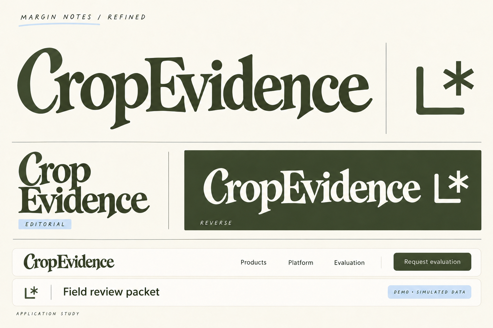

CROPEVIDENCE / SELECTED DIRECTION REFINEMENT
Margin Notes, refined.
The selected expressive lettering, tightened into a horizontal identity for the website and product. The large underline is removed, while a bracket and reference asterisk replace the flower-and-smile symbol.

- Horizontal wordmark: navigation, product header and reports.
- Stacked wordmark: spacious editorial and brand applications.
- Annotation symbol: compact supporting identifier; use where the company name is already clear.
- Olive and cream remain the primary identity colors; pastel blue supports annotations.
This is a generated raster design refinement. Final vector outlines, exact kerning, consistent symbol geometry and real small-size/favicon testing remain production work. The website and report strips are static application studies, not built software.
Built-in image generation used. Exact refinement prompts · Previous exploration